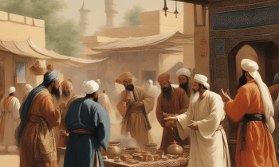

 Teori Cina
“Menggali Teori Penyebaran Islam dari Hutan Bambu dan Pagoda”
Menurut Teori Cina, perkembangan Islam di Nusantara bermula dari perantau Tiongkok. Masyarakat Tiongkok telah menjalin hubungan dekat dengan Indonesia sejak masa sebelum Islam dikenal di sana, terutama pada periode Hindu-Buddha ketika etnis Tiongkok berinteraksi dengan penduduk Indonesia melalui kegiatan perdagangan.
Teori Cina mengemukakan bahwa agama Islam mulai berkembang di Cina selama masa Dinasti Tang (618-905 M), terutama di daerah Kanton, Zhang-Zhao, Quanzhou, dan pesisir selatan Cina, di mana beberapa pemukiman Muslim sudah ada. Hal ini diungkapkan oleh Sumanto Al-Qurtuby. Teori Cina diperkuat oleh berbagai bukti yang menunjukkan hubungan antara Tiongkok dan Nusantara dalam konteks penyebaran Islam.
Salah satu bukti yang digunakan untuk mendukung Teori Cina adalah keberadaan Raden Patah, Raja Demak, yang memiliki keturunan Tiongkok. Raden Patah adalah salah satu tokoh penting dalam penyebaran Islam di Jawa pada abad ke-15. Penggunaan istilah Cina dalam gelar raja-raja Demak juga dianggap sebagai bukti pendukung teori ini. Hal ini menunjukkan adanya pengaruh budaya Tiongkok dalam lingkungan kekuasaan Islam di Nusantara pada masa lalu.
Selain itu, keberadaan masjid-masjid dengan arsitektur Tiongkok juga dianggap sebagai bukti pendukung Teori Cina. Beberapa masjid di Indonesia memiliki pengaruh arsitektur Tiongkok, seperti menara lonceng atau atap bertingkat yang khas. Hal ini menunjukkan adanya pengaruh budaya dan arsitektur Tiongkok dalam pembangunan masjid di Nusantara.
Catatan sejarah juga menyebutkan bahwa pedagang Tiongkok menjadi penduduk pertama di pelabuhan-pelabuhan Nusantara. Hal ini menunjukkan bahwa kontak awal antara Tiongkok dan Indonesia terjadi melalui kegiatan perdagangan. Dalam konteks ini, pedagang Tiongkok juga dapat menjadi agen penyebaran Islam di Nusantara, membawa ajaran agama tersebut bersama dengan kegiatan perdagangan mereka.
Namun, kelemahan Teori Cina terletak pada ketidakmampuannya menjelaskan awal penyebaran Islam di Indonesia secara rinci. Teori ini lebih memfokuskan peran Tiongkok dalam membawa Islam ke Indonesia daripada menggambarkan proses awal masuknya agama tersebut di wilayah tersebut. Proses masuknya Islam ke Indonesia melibatkan berbagai faktor, termasuk peran pedagang, ulama, dan interaksi dengan masyarakat setempat. Oleh karena itu, Teori Cina hanya memberikan gambaran sebagian dari proses yang lebih luas.
Dalam upaya untuk memahami sejarah penyebaran Islam di Nusantara, berbagai teori telah diajukan, termasuk Teori Cina. Perdebatan dan penelitian terus dilakukan untuk mendapatkan pemahaman yang lebih lengkap dan akurat tentang pengaruh budaya, perdagangan, dan faktor-faktor lain yang berkontribusi dalam penyebaran Islam di wilayah ini. Penting untuk mempertimbangkan berbagai perspektif dan bukti yang ada guna mendapatkan gambaran yang lebih komprehensif tentang sejarah Islam di Nusantara.